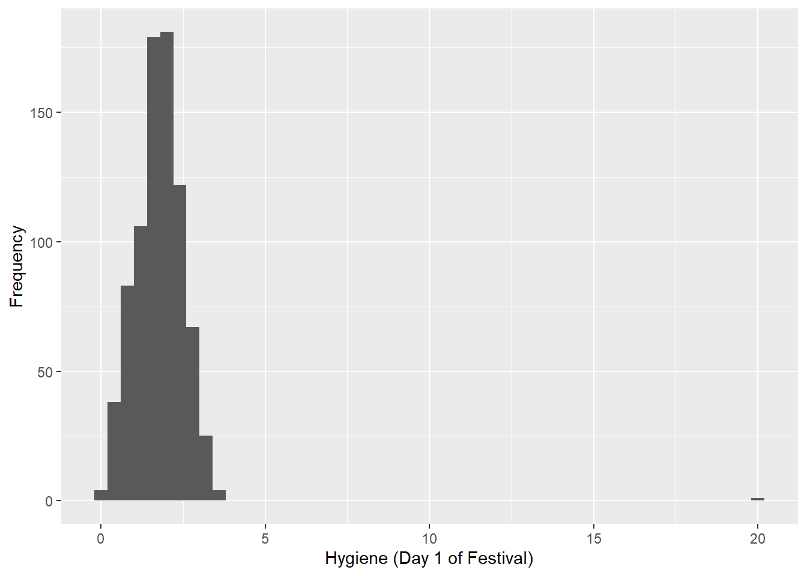
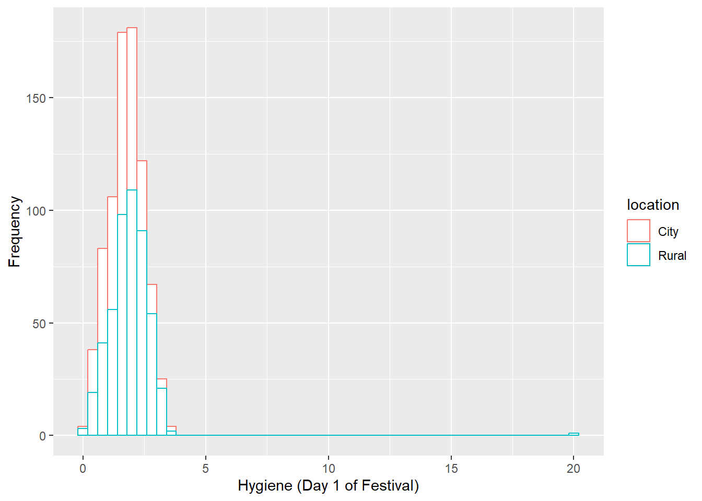
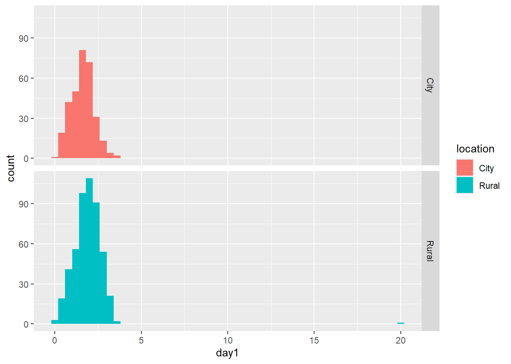
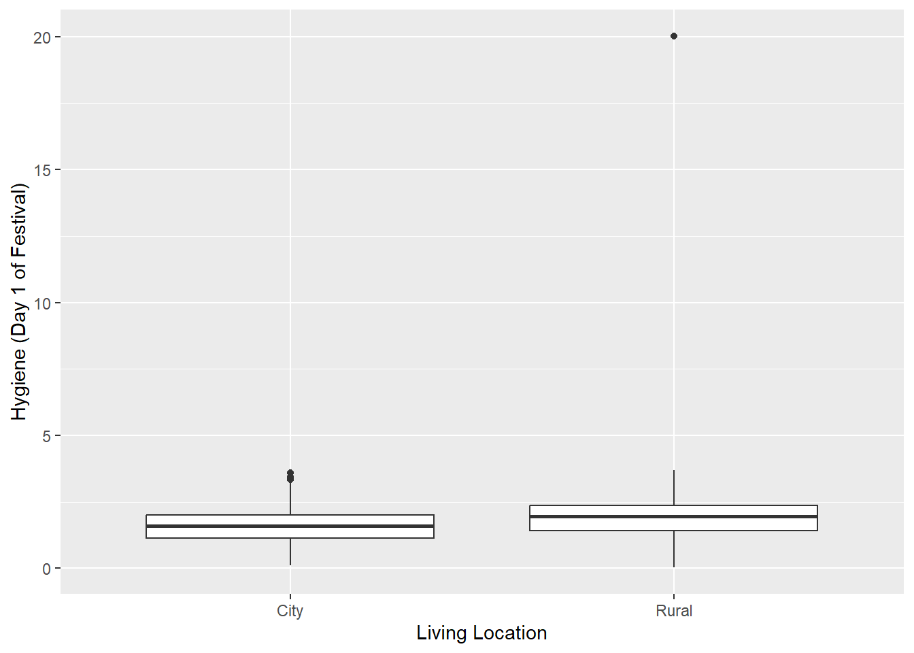
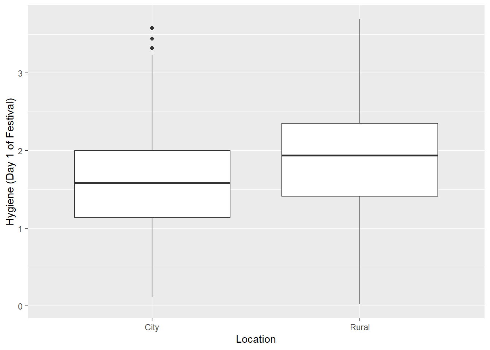
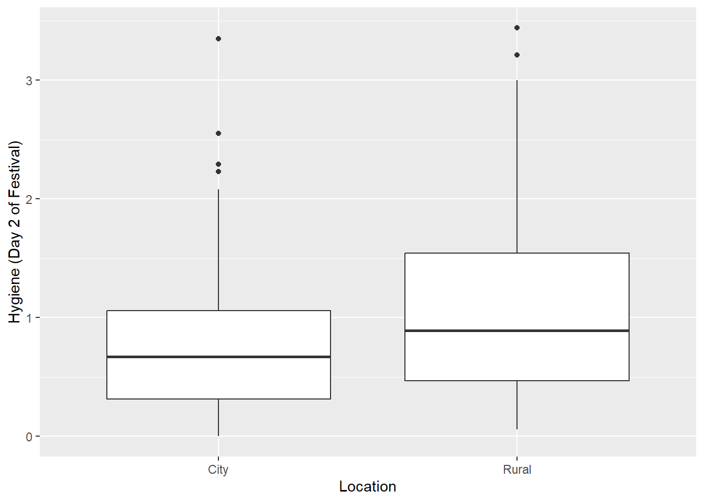
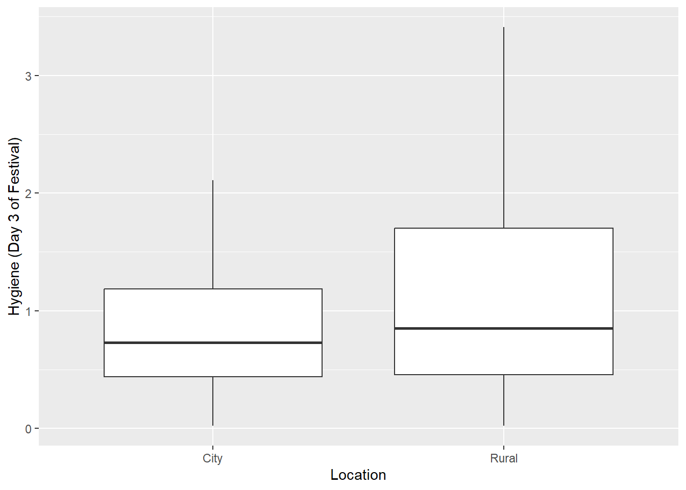
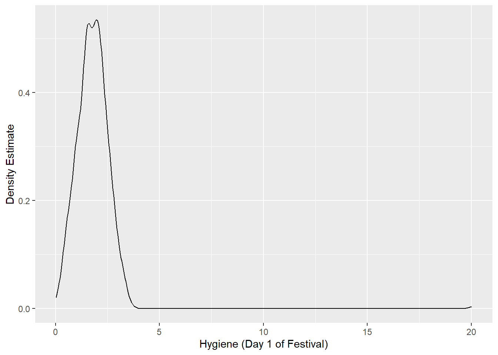
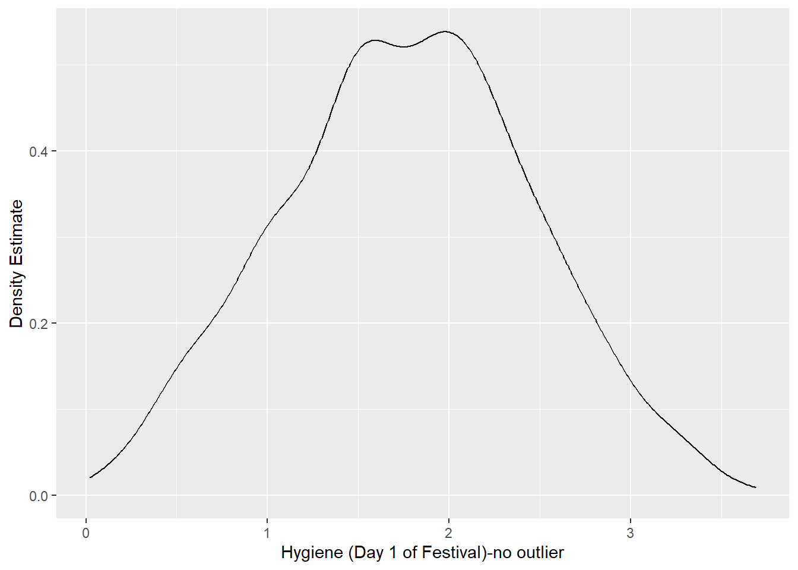
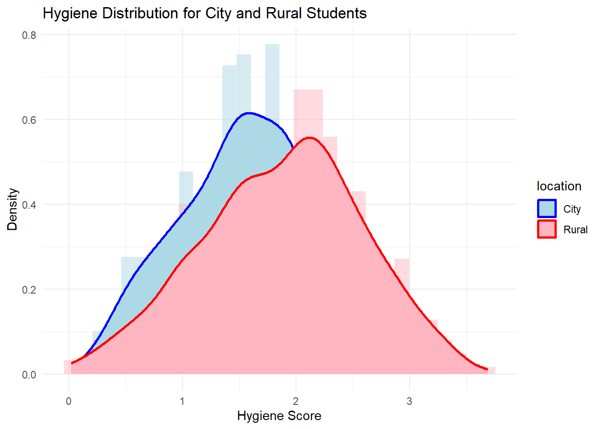

quiet_library <- function(pkg) {
suppressMessages(suppressWarnings({
if (!requireNamespace(pkg, quietly = TRUE)) {
install.packages(pkg, quiet = TRUE)
}
library(pkg, character.only = TRUE)
}))
}
quiet_library("tidyverse") # includes ggplot2, readr, dplyr, etc.
quiet_library("readr") # explicit (for read_delim), though also in tidyverse
#Amend this to reflect your folder structure
datalocation <- file.path("./")
#On Mac this would be datalocation <- file.path("/Users", "deirdre.lawless", "datafiles")Histograms
1. Install and load packages
This first bit of code installs all the packages needed to run the various functions within this file. We define a helper quiet_library() that installs (if needed) and loads a package quietly.
2. Stem and Leaf
Using the dataset RomCom.dat. This contains data from a study of 20 students living in the city and 20 living in a rural area who watched two movies. Half the sample watched Bridget Jones Diary, half watched Memento. Their interest in the movie was measured.
datapath <- file.path(datalocation,'Festival-UrbanRural.dat')
festivalData <- read.delim(datapath, header = TRUE)
#| label: load-data
#| message: false
#| warning: false
# Peek at columns available (uncomment if needed)
# names(festivalData)2.1 Example of a Stem and Leaf
#Stem and leaf of Hygiene Day 1
stem(festivalData$day1)
The decimal point is at the |
0 | 01112233333334444445555555555555566666666666666666677777777777777788+23
1 | 00000000000000000000000000000111111111111111111111111111111111122222+296
2 | 00000000000000000000000000000000000000000011111111111111111111111111+216
3 | 0000000011111222222222333333444467
4 |
5 |
6 |
7 |
8 |
9 |
10 |
11 |
12 |
13 |
14 |
15 |
16 |
17 |
18 |
19 |
20 | 03. HISTOGRAMS
3.1 Histogram of hygiene day
#Using a theme and set the bin width
festivalHistogram <- ggplot(festivalData, aes(day1)) + theme(legend.position="none")
festivalHistogram + geom_histogram(binwidth = 0.4) + labs(x = "Hygiene (Day 1 of Festival)", y = "Frequency")
3.2. Using differnt colours for location (but on a single histogram)
#Next set up the aesthetics and the labels differentiating by location
festivalHistogram <- ggplot(festivalData, aes(x=day1, color=location))
festivalHistogram + geom_histogram(fill="white",binwidth = 0.4) + labs(x = "Hygiene (Day 1 of Festival)", y = "Frequency")
3.3 Creating separate histograms one for each living location
#Use facets to create sub-plots for each location
festivalHistogram <- ggplot(festivalData, aes(x=day1, fill=location)) + geom_histogram(binwidth = 0.4) + facet_grid(vars(location))
festivalHistogram
4. BOXPLOTS
4.1 Boxplot of hygiene day 1 by living location
festivalBoxplot <- ggplot(festivalData, aes(location, day1))
festivalBoxplot + geom_boxplot() + labs(x = "Living Location", y = "Hygiene (Day 1 of Festival)")
#You should see an outlier for Rural Day 1 (around 20 on the y axis)4.2 Boxplot with outlier removed
#We create a new dataframe from the dataset with the outlier removed
festivalData2 = read.delim("Festival-UrbanRural-NoOutlier.dat", header = TRUE)
festivalBoxplot2 <- ggplot(festivalData2, aes(location, day1))
festivalBoxplot2 + geom_boxplot() + labs(x = "Location", y = "Hygiene (Day 1 of Festival)")
#Spot the differences....4.3 Boxplot for hygiene day 2 and day 3
Using the original data
#Boxplot for day 2
festivalBoxplot <- ggplot(festivalData, aes(location, day2))
festivalBoxplot + geom_boxplot() + labs(x = "Location", y = "Hygiene (Day 2 of Festival)")Warning: Removed 546 rows containing non-finite outside the scale range
(`stat_boxplot()`).
#Boxplot for day 3
festivalBoxplot <- ggplot(festivalData, aes(location, day3))
festivalBoxplot + geom_boxplot() + labs(x = "Location", y = "Hygiene (Day 3 of Festival)")Warning: Removed 687 rows containing non-finite outside the scale range
(`stat_boxplot()`).
5. Density Plots
A density plot is a representation of the distribution of a numeric variable. It is a smoothed version of the histogram and is used in the same concept.
5.1 Density plot of hygiene day 1
festivalDensity <- ggplot(festivalData, aes(day1))
festivalDensity + geom_density() + labs(x = "Hygiene (Day 1 of Festival)", y = "Density Estimate")
If we look at a summary of the data we find there is one outlier in the festival data with a score of 20.020
summary(festivalData$day1) Min. 1st Qu. Median Mean 3rd Qu. Max.
0.020 1.312 1.790 1.793 2.230 20.020 If we use a dataset with it removed - notice the change in the max in the summary and in the density plot
summary(festivalData2$day1) Min. 1st Qu. Median Mean 3rd Qu. Max.
0.020 1.312 1.790 1.771 2.230 3.690 festivalDensity <- ggplot(festivalData2, aes(day1))
festivalDensity + geom_density() + labs(x = "Hygiene (Day 1 of Festival)-no outlier", y = "Density Estimate")
# Create a histogram showing hygiene levels day 1 for city and urban students separately
# Impose a denisty curve on each histogram
ggplot(festivalData2, aes(x = day1, fill = location)) +
geom_histogram(aes(y = ..density..), alpha = 0.5, position = "identity", bins = 30) +
geom_density(aes(color = location), size = 1) +
labs(title = "Hygiene Distribution for City and Rural Students",
x = "Hygiene Score",
y = "Density") +
theme_minimal() +
scale_fill_manual(values = c("lightblue", "lightpink")) +
scale_color_manual(values = c("blue", "red"))Warning: Using `size` aesthetic for lines was deprecated in ggplot2 3.4.0.
ℹ Please use `linewidth` instead.Warning: The dot-dot notation (`..density..`) was deprecated in ggplot2 3.4.0.
ℹ Please use `after_stat(density)` instead.